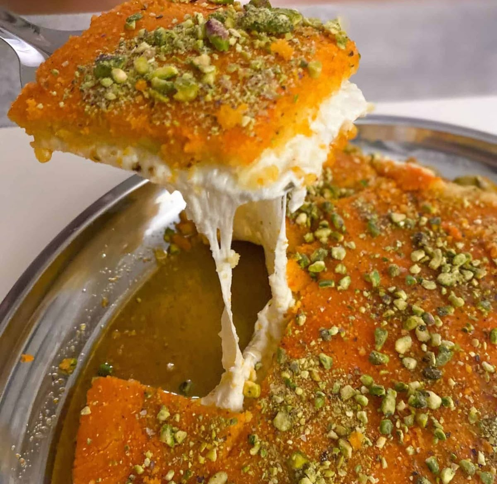

Kunafa

Ingredients:
- 500g kunafa dough (shredded phyllo)
- 250g melted butter
- 2 cups sweet cheese (akkawi, mozzarella, or ricotta)
- 1 cup sugar syrup (see below)
- Optional: pistachios for garnish
Preparation👨‍🍳:
- Prepare syrup: Boil sugar and water for 8 minutes. Add lemon juice. Add rose water at the end. Let cool.
- Prepare kunafa base: Mix shredded kunafa with melted butter well.
- Assemble: In a greased round tray, add half of kunafa and press down. Add cheese filling, then cover with remaining kunafa.
- Bake: Bake at 180°C (350°F) for 30-40 minutes until golden.
- Finish: Flip onto a plate, pour syrup on top, and garnish with pistachios. Serve warm.